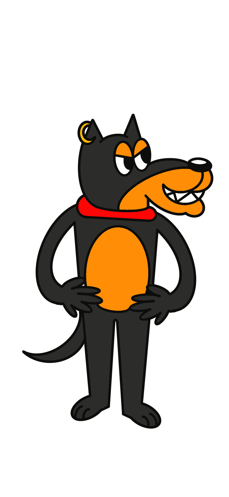
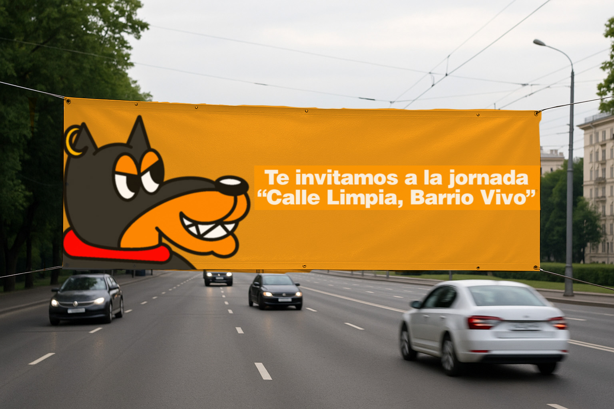

1. El Personaje y su Mensaje
Nuestro personaje principal es un vecino ilustrado que invita al cuidado de los espacios públicos con su frase: "Tus pasos también cuentan. Limpia, recoge, respeta." Su estilo amigable conecta con niños, adultos y adultos mayores.



Lucio
2. Explicación del Proyecto
Esta campaña gráfica nace como respuesta al problema de los desechos de animales en las calles del barrio La Loma, Comuna 13 de Medellín. A través del diseño visual y mensajes directos, buscamos fomentar la tenencia responsable de mascotas, el respeto por el espacio público y la participación comunitaria.
3. Productos Visuales
Mopi

Pasacalles informativo
Tasa